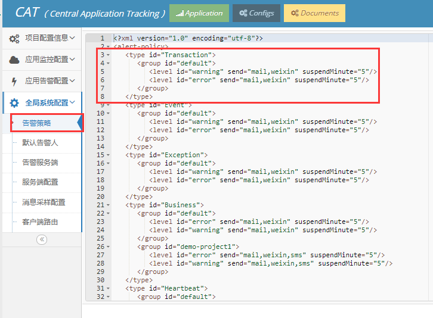
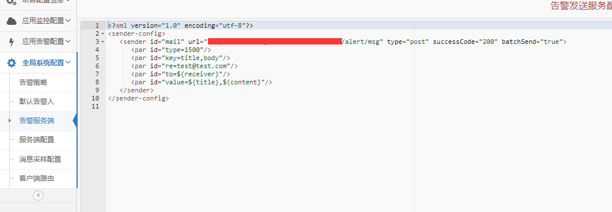
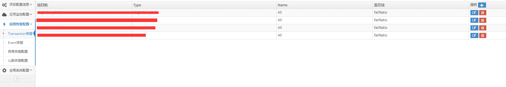

如下图所示，告警策略官方有模板，只要适当修改一下即可，这里我详细解释一下这里涉及到的一些概念，刚接触的人真的可能一脸懵逼

首先看到这里指定send为mail，weixin，sms等等是不是很激动，以为它都给你封装好了，你只需配置一下就可以发送告警？别想多了，这里只代表一个个类型，suspendMinute代表发送告警间隔时间，避免同样的告警一直发送，而warning和error在这个系统中也多次出现了都是同样的意思，只是代表一种告警类型，不要以为是你系统报了error错误或者warn错误它就会报警，而id为Transaction则是一种标识，当在别的便签里看到id为该值时就知道了
如下图，对应了告警策略中mail类型的服务端配置，这里只有url需要改动，也是告警的核心功能，自己写接口去，把发送邮件的接口提供出来然后把地址放这里

请注意一点，也是我踩过的坑，看到successCode="200"这个配置了吗？我们提供接口肯定是要有返回值的吧，我没在它的文档里找到交代，在报完错后直接找它的源码，发现了它判断接口调用成功的依据是你返回给它的字符串里包含"200"，别怀疑了，连引号也包括，我第一次返回的是个对象属性里存在Integer类型的code为200，这都不行，必须是字符串的，所以最简单的返回值如下：
@RequestMapping(value = "/alert/msg")
public String sendAlert(HttpServletRequest request) {
...
发送邮件代码，网上一大堆自己抄，省略
...
return "200";
}或者code为String类型
如图，可以是Transaction级别也可以是Event级别，以Transaction为例，点右上角加号可以添加监控项

因为Cat本身提供了一个例子，但同时也可能起到误导作用，它例子的Type类型都是URL，但是这不是一个可选项，这是一个必填项，而填什么文档有没有交代清楚，导致了我调试很久才反应过来，这里应该填的是我们系统自己埋点时，Transaction中填的type，如下
Transaction newTransaction(String type, String name) {或者用注解的时候我们也会指定个type，这里需要填写的就是这个